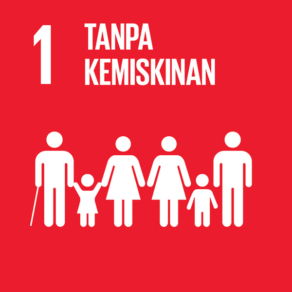
Mengakhiri Kemiskinan Dalam Segala Bentuk di Manapun
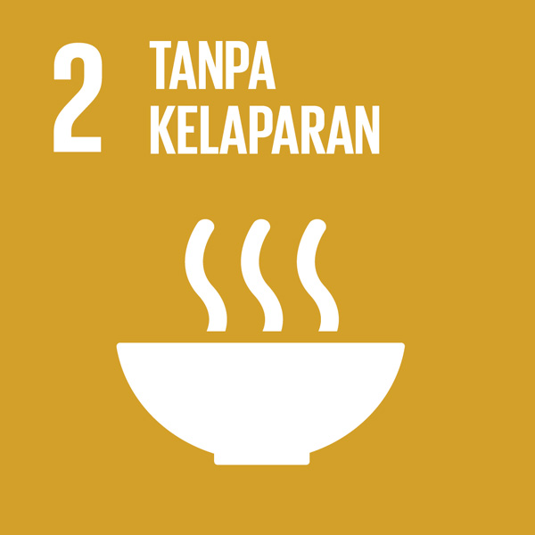
Menghilangkan Kelaparan, Mencapai Ketahanan Pangan dan Gizi yang Baik, serta Meningkatkan Pertanian Berkelanjutan
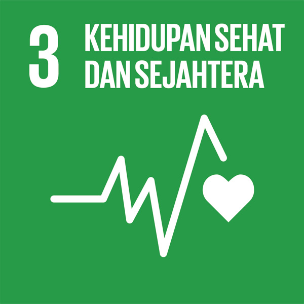
Menjamin Kehidupan yang Sehat dan Meningkatkan Kesejahteraan Seluruh Penduduk Semua Usia
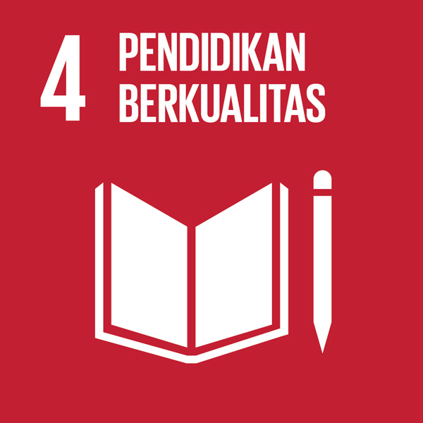
Menjamin Kualitas Pendidikan yang Inklusif dan Merata serta Meningkatkan Kesempatan Belajar Sepanjang Hayat untuk Semua
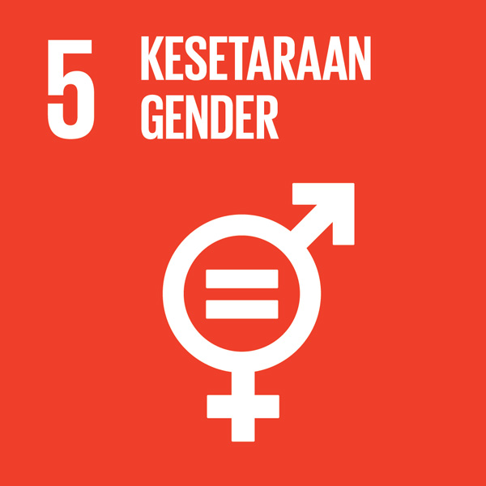
Mencapai Kesetaraan Gender dan Memberdayakan Kaum Perempuan
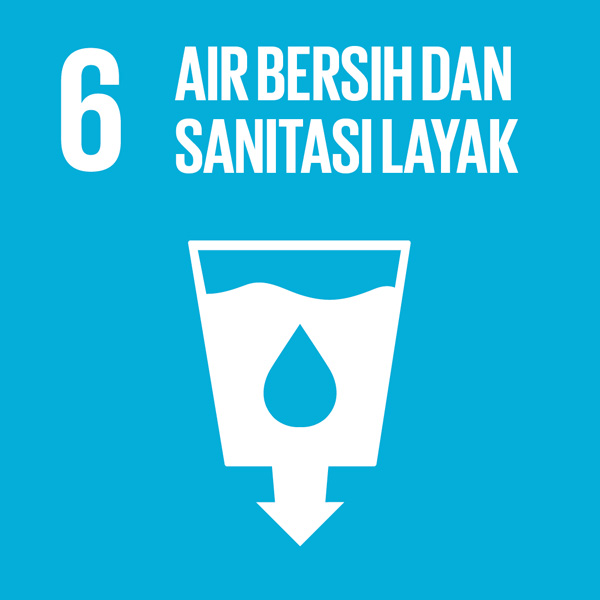
Menjamin Ketersediaan serta Pengelolaan Air Bersih dan Sanitasi yang Berkelanjutan untuk Semua
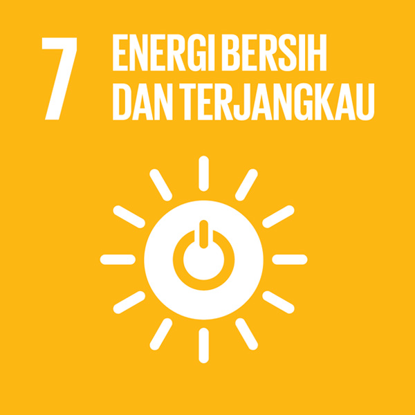
Menjamin Akses Energi yang Terjangkau, Andal, Berkelanjutan dan Modern untuk Semua
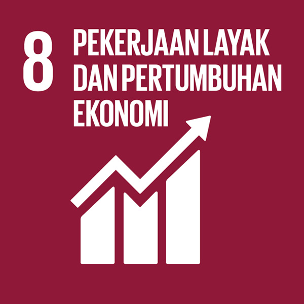
Meningkatkan Pertumbuhan Ekonomi yang Inklusif dan Berkelanjutan, Kesempatan Kerja yang Produktif dan Menyeluruh, serta Pekerjaan yang Layak untuk Semua
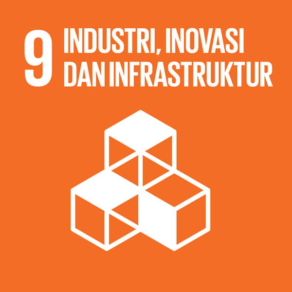
Membangun Infrastruktur yang Tangguh, Meningkatkan Industri Inklusif dan Berkelanjutan, serta Mendorong Inovasi
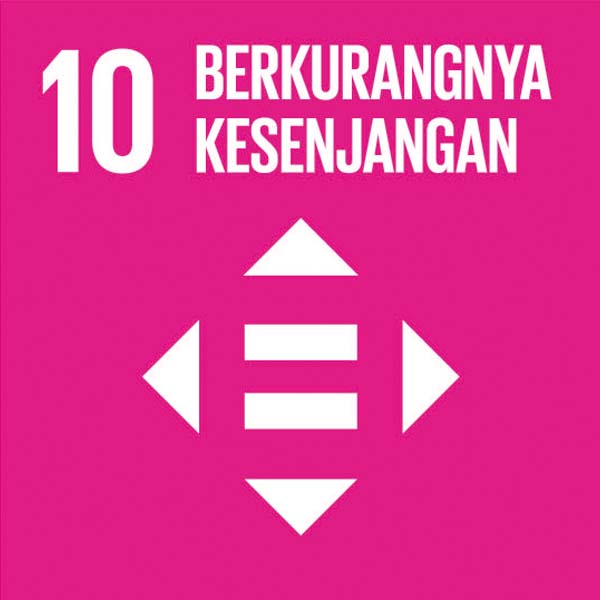
Mengurangi Kesenjangan Intra dan Antar Negara
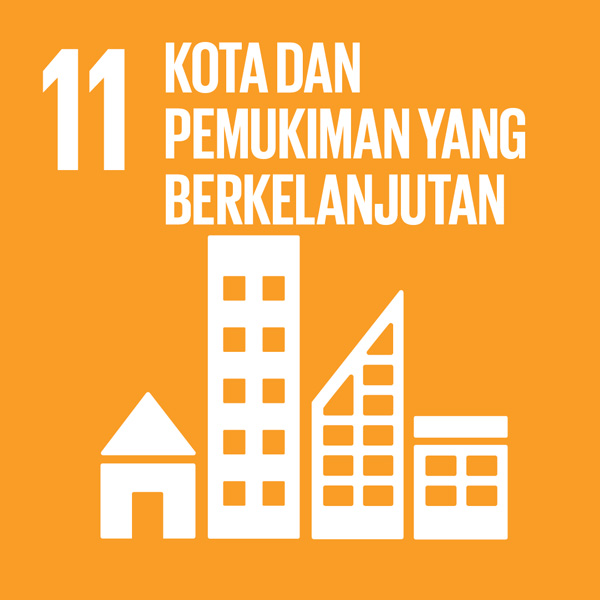
Menjadikan Kota dan Permukiman Inklusif, Aman, Tangguh dan Berkelanjutan
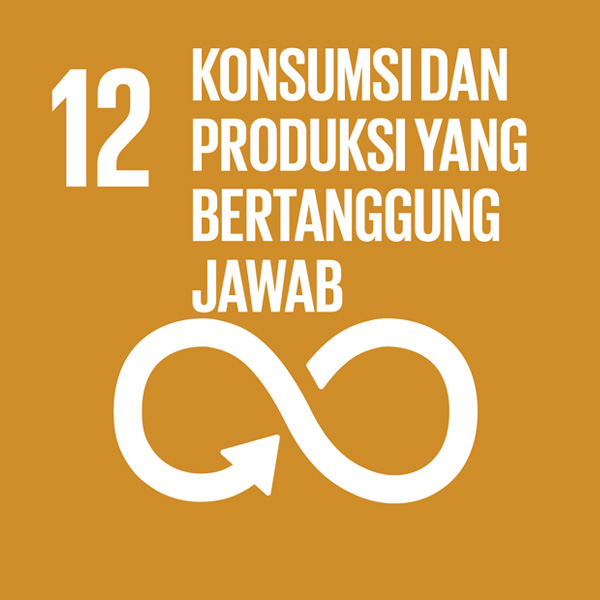
Menjamin Pola Produksi dan Konsumsi yang Berkelanjutan
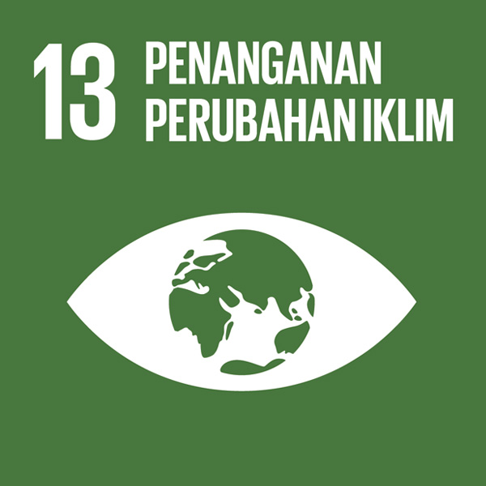
Mengambil Tindakan Cepat untuk Mengatasi Perubahan Iklim dan Dampaknya
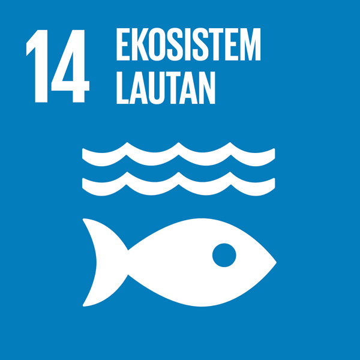
Melestarikan dan Memanfaatkan Secara Berkelanjutan Sumber Daya Kelautan dan Samudera untuk Pembangunan Berkelanjutan
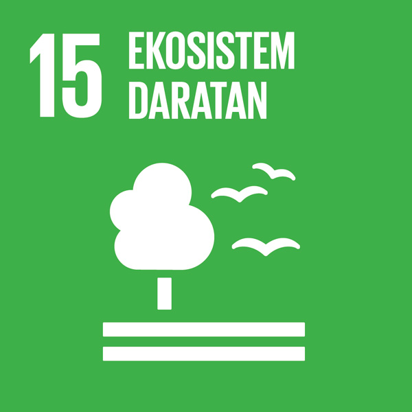
Melindungi, Merestorasi dan Meningkatkan Pemanfaatan Berkelanjutan Ekosistem Daratan, Mengelola Hutan Secara Lestari, Menghentikan Penggurunan, Memulihkan Degradasi lahan, serta Menghentikan Kehilangan Keanekaragaman Hayati
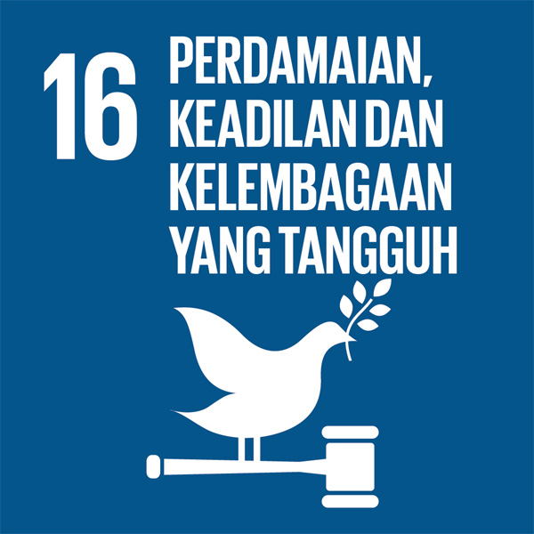
Menguatkan Masyarakat yang Inklusif dan Damai untuk Pembangunan Berkelanjutan, Menyediakan Akses Keadilan untuk Semua, dan Membangun Kelembagaan yang Efektif, Akuntabel, dan Inklusif di Semua Tingkatan
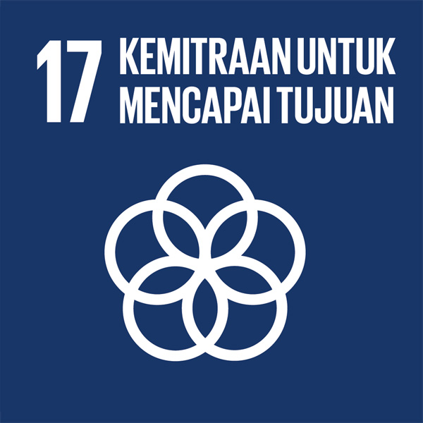
Menguatkan Sarana Pelaksanaan dan Merevitalisasi Kemitraan Global untuk Pembangunan Berkelanjutan